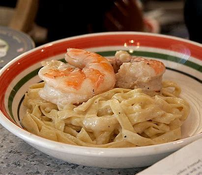
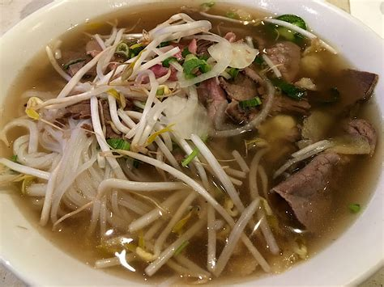
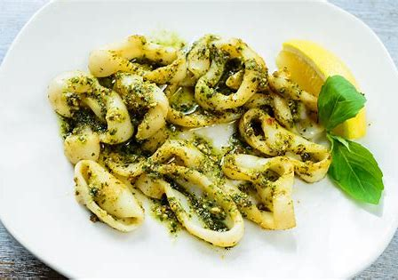

Shrimp Alfredo is my favorite dish because the first time I went to Olive Garden, I had no idea what to order. Pasta or seafood has never been my favorite, so I wasn’t sure why I chose this as my meal. However, the combination of the two turned out to be one of the best meals I’ve ever eaten. I guess you never know until you try because this has become my favorite dish ever since I tried it!
| Ingredient | Quantity |
|---|---|
| Noodles | 8 ounces of fettuccine (can be gluten-free) |
| Shrimp | 1 pound (peeled, deveined, tail-off recommended) |
| Butter | 8 tablespoons (divided between shrimp and sauce) |
| Garlic | 3 teaspoons minced (divided) |
| Cream | 1½ cups heavy whipping cream |
| Seasoning | ½ teaspoon salt, ½ teaspoon pepper, 3 sprinkles of Italian seasoning |
| Cheese | 1½ cups shredded parmesan, ½ cup shredded Romano |
| Garnish | Fresh parsley (optional) |
Avery’s favorite dish is Pho, a traditional Vietnamese soup consisting of broth, rice noodles, herbs, and meat, usually beef or chicken. Avery loves the depth of flavor in the broth and how the dish is both comforting and healthy at the same time. It's one of those dishes that always makes Avery feel satisfied, no matter the weather.
| Ingredient | Quantity |
|---|---|
| Beef broth | 4 cups |
| Rice noodles | 200 grams |
| Beef (or chicken) | 200 grams (sliced) |
| Herbs (basil, cilantro) | 1 handful |
| Bean sprouts | 100 grams |
| Fish sauce | 2 tablespoons |
| Lime | 1 (for garnish) |
Sam's favorite dish is Pesto Tortellini, which combines the richness of cheese-filled tortellini with the vibrant, fresh flavor of pesto sauce. Sam loves how the sauce coats the pasta perfectly, offering a balance of creamy, nutty, and herby flavors. It's a comforting and filling meal that Sam enjoys having any time of the week.
| Ingredient | Quantity |
|---|---|
| Cheese tortellini | 300 grams |
| Pesto sauce | 1 cup |
| Pine nuts | 2 tablespoons (for garnish) |
| Parmesan cheese | ½ cup (grated) |
| Olive oil | 2 tablespoons |
| Garlic | 1 clove (minced) |